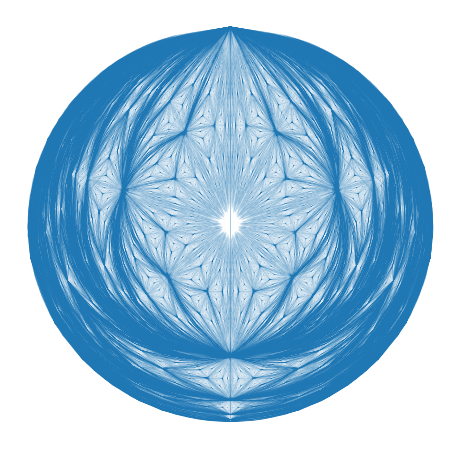
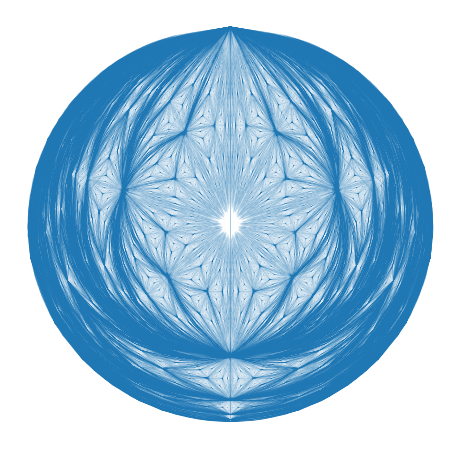

For the code to this project, see my github!
Unfolding Circles into Triangles
I recently saw this visual proof deriving the formula for the area of a circle. The proof essentially looks like this:
- Start with a circle of radius \(r\)
- Split it into many thin concentric rings — note that the concentric ring \(r'\) away from the center has a length of \(2\pi r'\).
- Unfold each thin concentric ring into a thin flat strip, without changing the location of each strip's point directly below the center of the circle, to form a new structure. As a result, each strip has the same distance to the former circle's original center point as it did before it was unfolded.
- Because the vertical distance has not changed, the length of each horizontal strip is still \(2\pi r'\) where \(r'\) is now the distance from the top of the new structure.
- Because the lengths of each strip of the structure varies linearly with distance from its top, the new structure must be a triangle. It's base is the bottom strip with a length of \(2\pi r\) and its height is just \(r\) because distance from the circle's original center point was preserved.
- The area of a triangle is \(\frac{1}{2}\text{base}\cdot \text{height}=\frac{1}{2} 2\pi r\cdot r = \pi r^2\). This concludes the proof.
This proof cool and its cooler when shown visually. The ease with which someone can smoothly transform a circle into a triangle is really nice and reflects the fact that both have some kind of thickness (radius vs width) that is linearly related to position (distance from center vs distance from a constructed line at topmost point parallel to base).
It also raises another exciting possibility...
Folding Triangles into Circles
We can fold triangles into circles as long as the triangle satisfies \(\text{base}=2\pi\cdot \text{height}\), the strips can be bent into rings that can be arranged concentrically to form a circle. Furthermore, if we are willing to stretch the horizontal or vertical axes, we can make the previous requirement true for any triangle. Therefore, we have the following strategy:
- Take any triangle and calculate its base and height
- Stretch the horizontal axis by a factor of \(2\pi\cdot \text{height}/\text{base}\) to produce a stretched triangle
- Chop up the stretched triangle into tiny strips parallel to its base
- Fold the tiny strips into rings
- Center all rings around the same point to form a circle
The topological similarity can also be enhanced just beyond preserving the structure of each strip when it's folded into a ring. The rings can also be arranged concentrically so that moving from the center of the circle outward along a path yields the same structure (albeit stretched) as moving from the top of the triangle to its base along a path. This can be done just by rotating each ring around the center of the circle until the paths line up. More excitingly, if the paths are chosen to be rescalings of each other, then the topology of the circle around that path will also be a rescaling of the topology of the original triangle!
A Particular Folding Methodology
While the above concept is unspecified, a specific methodology of transforming a triangle into a circle can be derived by reversing the steps of the visual proof. Note that the resultant triangle in the visual proof is isosceles and symmetric across the vertical axis because the point on each ring immediately below the circle's center was left unmoved. For this reason, we will start with an isosceles triangle with symmetry across the vertical axis. Then we do the following:
- Calculate the base and height of the triangle
- Place the triangle on an \((x,y)\) coordinate grid with its top-most point centered at \((0,0)\). Then multiply the x-coordinate of each point \(i\) on the triangle \(x_i\) so \(x_i := 2\pi\cdot \text{height}/\text{base}\cdot x_i\)
- Map the triangle to polar coordinates (radius): each point \(i\) on the triangle with the same distance below the \(x=0\) line are part of the same strip and thus have a radial coordinate \(r_i = |y_i|\)
- Map the triangle to polar coordinates (angle): each point \(i\) on the triangle must be folded into a circle. We choose to stop points on the axis of symmetry (where \(x_i=0\)) from moving and must rotate all points on the same strip to different angles in a range of size \(2\pi\). If a point \(i\) is associated with strip of width \(w_i\), we might do \(\theta_i = -\frac{\pi}{2} + 2\pi\cdot x_i/w_i\). From the slope of the triangle, we therefore have \(w_i=2\pi|y_i|\) so \(\theta_i = -\frac{\pi}{2} + x_i/y_i\) by substitution.
- Finally, map the polar coordinates back to cartesian to produce our circle with each point at \((x_i', y_i')=(r_i\cos(\theta_i), r_i\sin(\theta_i))\)
Visualizing Triangle→Circle Transformations
To better understand this transformation, we can look at what happens when we place a regular cartesian grid inside a triangle and then transform the structure into a circle.
Folding Weird Triangles
Now that we know how to fold triangles into circles while preserving topological features, we can also fold weird triangles with interesting topology into circles, to produce cool looking circles. For example, we can fold up the Sierpinski Triangle...
... and fold it up into a circle. Note that one can zoom in on the center of the folded circle and produce self-similar circles. Height on the Sierpinski triangle corresponds to radial distance on the folded circle. Thus, in the same way equal-height (horizontal) cuts on the Sierpinski Triangle produce self-similar Sierpinski triangles, equal radius (radial) cuts produce self-similar folded circles.
Again, this can be done with any interesting looking triangle. Below is an example of it applied to a modification of the Sierpinski triangle:
Finally, here is the same methodology applied to a completely different fractal: the center of mass fractal:
 
